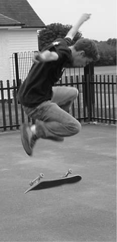
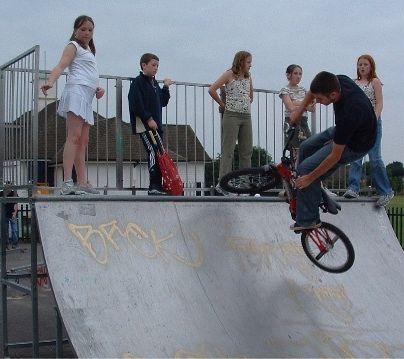
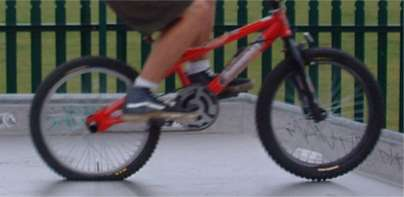

 yeah
yeah i know, skateboardings bad, blah blah blah.
so saturday sucked pretty much. i was meant to be meeting
someone to buy a bike off them, but they never showed so i had
to walk everywhere all day. we went to look for some skateparks
to ride. the first one we went to didn't exist. the second one
was kingston, a pretty good park. the only thing was you have to
have a helmet to ride, and they don't have any for hire, so we
couldn't ride that either. if you tried they called the police,
and the police just stood there watching you all the time so
that put and end to that.
so we went to a green fair in hampton court park, where they
tried to convince us that electric bikes are environmentally
friendly, until we got thrown out for bunny hopping over each
other in the circus section of the fair. apparently we were
encouraging others to do the same.
later on we went to another park quite near. there was just a
half pipe and driveway, but tim's rear tyre blew out in the back
of nics car, so that left us without a bike. we went to the park
anyway with adam (left) who skates, and got a few skateboarding
photos. i'll make a page for him sometime. 
there park was filled with a bunch of ten year olds giving us
all lip and pretending they were hard. they were so young they
were wearing matching clothes.
one little kid let us borrow his bmx, but his tyres were very
flat, as you can see in the pictures below, so it was hard to do
much. fun?

don't
forget the unknowntrailsrider |